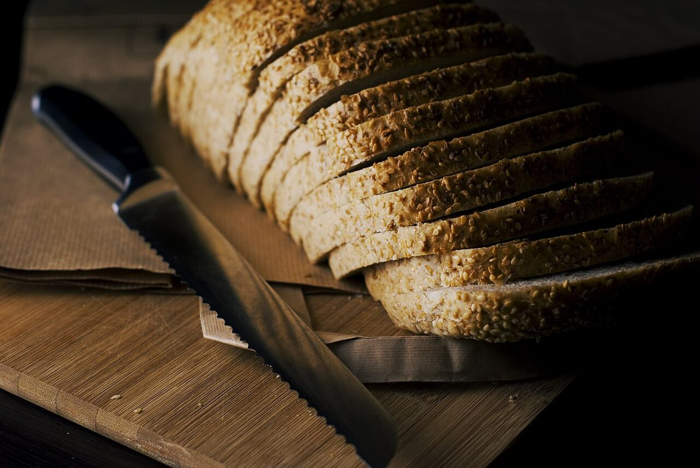
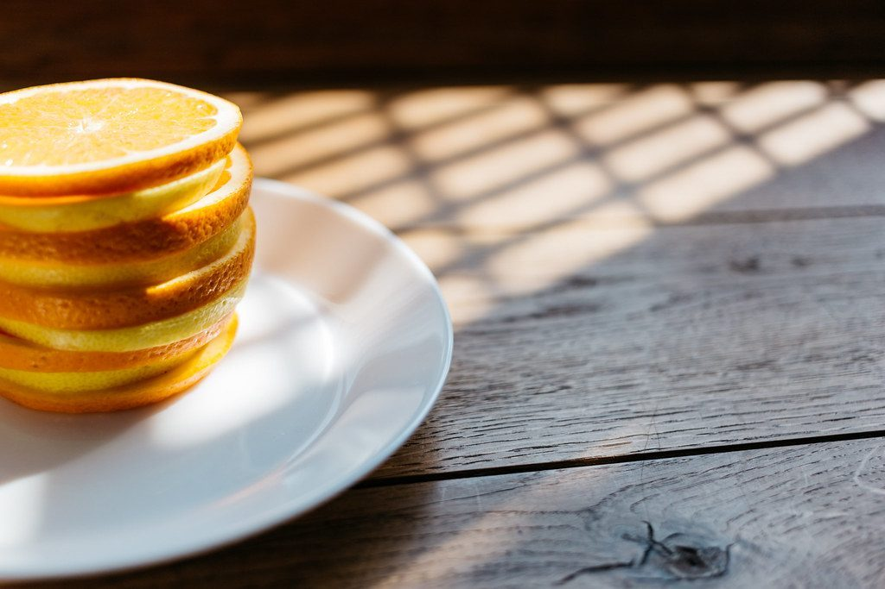

カフェ / 〒849-5121 佐賀県唐津市浜玉町横田上699-5
Astep
営業時間やメニューなど、詳しいことは準備中です。電話は 080-4407-1015。まずはInstagramをのぞいてみてください。
A0を半分ずつ切り分けた図。色のついた部分をクリックすると、それぞれのページへ移動します。
制作側の連想
「A」から、A判の紙へ
店名の頭の「A」から、A判の紙のサイズを連想しました。A0の紙を半分に切ると A1、もう半分に切ると A2、さらに A3、A4、A5 と、きれいに小さくなっていきます。このサイトの5ページは、A0を半分ずつ切り分けて出てくる A1〜A5 に見立てています。制作側の連想で、お店の理念・由来とは無関係です。
切り分け表
半分にするたび、面積も半分
| 判 | 大きさ(mm) | A0に対する面積 | このサイトでは |
|---|---|---|---|
| A0 | 841 × 1189 | 1 | もとの一枚(右の図の全体) |
| A1 | 594 × 841 | 1/2 | ホーム(このページ) |
| A2 | 420 × 594 | 1/4 | 店のこと |
| A3 | 297 × 420 | 1/8 | メニュー |
| A4 | 210 × 297 | 1/16 | 口コミ |
| A5 | 148 × 210 | 1/32 | アクセス |
どの大きさも、縦と横の比は約 1 : 1.414(1 : √2)です。半分に切っても比が変わらないので、ぴったり重ねられます。
写真ギャラリー
紙の上に並べてみた、物のクローズアップ
写真は撮影地不明のフリー素材のイメージです。お店のものではなく、唐津市や実際の商品を写したものでもありません。枠の大きさを A3→A4→A5→A6 と半分ずつにしています。




ご案内
お店のこと(確認できたものだけ)
| 所在地 | 〒849-5121 佐賀県唐津市浜玉町横田上699-5 |
|---|---|
| 電話 | 080-4407-1015 |
| 営業時間 | 準備中 |
| 定休日 | 準備中 |
| ご予約 | 準備中 |
| 駐車場 | 準備中 |
| SNS | Instagram @astep_farm_to_table |